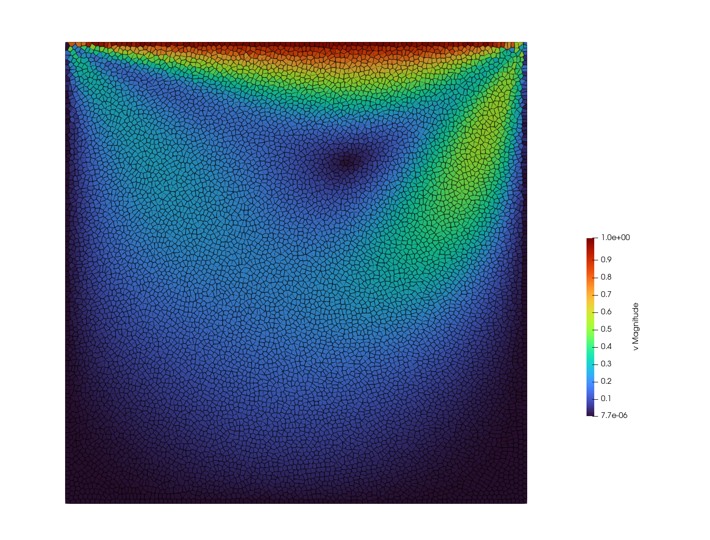

Example 2: Lid-driven cavity
Simulation of a vortex induced by viscosity. The domain is a square
$\Omega = [0,1] \times [0,1]$
with Dirichlet boundary conditions everywhere. The sides and bottom are no-slip condition
$\mathbf{v} = 0, \quad \mathbf{x} \in \Gamma_\mathrm{left}\cup \Gamma_\mathrm{right} \cup \Gamma_\mathrm{bottom}.$
whereas the top side prescribes a uniform velocity in horizontal direction:
$\mathbf{v} = \begin{pmatrix} 1 \\ 0 \end{pmatrix}, \quad \mathbf{x} \in \Gamma_\mathrm{up}.$
The fluid is described by incompressible Navier-Stokes. The solution should be a steady flow, be we can reach it with a dynamic solver by setting sufficiently large t_end. To plot streamlines, open the pvd file in paraview and use the Evenly Spaced Streamlines filter.
module cavity
include("../src/LagrangianVoronoi.jl")
using .LagrangianVoronoi, DataFrames, CSV, PlotsWe will use a strictly incompressible model but using the stiffened gas model with large initial sound speed like c0 = 1e3 is also fine.
const Re = 100 # Reynolds number
const N = 100 # resolution
const dr = 1.0/N
const dt = min(0.1*dr, 0.1*Re*dr^2)
const t_end = 0.1*Re
const export_path = "results/cavity/Re$Re"
const rho0 = 1.0 # fluid densityDefine the boundary condition for velocity and the initial condition. We must specify the density, mass and the dynamic coefficient of viscosity. To get incompressible fluid, we set the initial sound speed (squared) to plus infinity.
function vDirichlet(x::RealVector)::RealVector
islid = isapprox(x[2], 1.0, atol = 0.1dr)
return islid ? VECX : VEC0
end
function ic!(p::VoronoiPolygon)
p.rho = rho0
p.mass = p.rho*area(p)
p.mu = 1.0/Re
p.c2 = Inf
end
mutable struct Simulation <: SimulationWorkspace
grid::GridNS
mesh_quality::Float64
energy::Float64
solver::PressureSolver{PolygonNS}
Simulation() = begin
domain = UnitRectangle()
grid = GridNS(domain, dr)
populate_lloyd!(grid, ic! = ic!)
return new(grid, 0.0, 0.0, PressureSolver(grid))
end
endWhen defining the step, we need to activate boundary friction. We omit the equation of state as there is no such thing in the incompressible regime.
function step!(sim::Simulation, t::Float64)
move!(sim.grid, dt)
find_pressure!(sim.solver, dt)
pressure_step!(sim.grid, dt)
find_D!(sim.grid)
viscous_step!(sim.grid, dt; artificial_viscosity = false)
bdary_friction!(sim.grid, vDirichlet, dt)
find_dv!(sim.grid, dt)
relaxation_step!(sim.grid, dt)
return
end
function postproc!(sim::Simulation, t::Float64)
sim.mesh_quality = Inf
for p in sim.grid.polygons
sim.energy += 0.5*p.mass*norm_squared(p.v)
sim.mesh_quality = min(sim.mesh_quality, p.quality)
end
percent = round(100*t/t_end, digits = 5)
println("sim time = $t ($(percent)%)")
println("mesh quality = $(sim.mesh_quality)")
println("kinetic energy = $(sim.energy)")
println()
return
endFinally, we declare some functions to extract more data. Namely, we measure the horizontal velocity along the vertical axis and vice versa.
function compute_fluxes(grid::VoronoiGrid, res = 100)
s = range(0.,1.,length=res)
v1 = zeros(res)
v2 = zeros(res)
for i in 1:res
#x-velocity along y-centerline
x = RealVector(0.5, s[i])
v1[i] = point_value(grid, x, p -> p.v[1])
#y-velocity along x-centerline
x = RealVector(s[i], 0.5)
v2[i] = point_value(grid, x, p -> p.v[2])
end
#save results into csv
data = DataFrame(s=s, v1=v1, v2=v2)
CSV.write(joinpath(export_path, "vprofile_legacy.csv"), data)
make_plot()
endThe plot of velocity is compared to a reference solution by Abdelmigid et al.
function make_plot()
ref_x2vy = CSV.read("reference/ldc_x2vy_abdelmigid.csv", DataFrame)
ref_y2vx = CSV.read("reference/ldc_y2vx_abdelmigid.csv", DataFrame)
propertyname = Symbol("Re", Re)
ref_vy = getproperty(ref_x2vy, propertyname)
ref_vx = getproperty(ref_y2vx, propertyname)
data = CSV.read(joinpath(export_path, "vprofile.csv"), DataFrame)
plt = plot(
data.s, [movingavg(data.v2) movingavg(data.v1)],
xlabel = "x, y",
ylabel = "u, v",
label = ["v" "u"],
linewidth = 2,
legend = :topleft,
color = [:orange :royalblue]
)
scatter!(plt,
[ref_x2vy.x ref_y2vx.y], [ref_vy ref_vx],
label = false,
color = [:orange :royalblue],
markersize = 4,
markerstroke = stroke(1, :black),
markershape = [:circ :square]
)
savefig(plt, joinpath(export_path, "vprofile.pdf"))
endFinally, wrap everything into the function main.
function main()
sim = Simulation()
@time run!(
sim,
dt,
t_end,
step!;
postproc! = postproc!,
path = export_path,
nframes = 200, # number of time frames
vtp_vars = (:v, :P, :quality), # local variables exported in vtk
csv_vars = (:energy, :mesh_quality) # global variables exported in csv
)
compute_fluxes(sim.grid)
return
end
if abspath(PROGRAM_FILE) == @__FILE__
main()
end
endThis page was generated using Literate.jl.